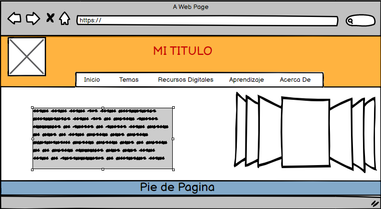

Borrador Del Contenido
Flex Box
Flex es uno de los nuevos valores HTML5 para propiedad CSS display,que nos permite maquetar nuestras páginas web de una manera mucho más fácil
de lo que se hacía con la forma tradicional, en la que utilizábamos propiedades
como float o position, entre otras.
Se llama Flex porque tenemos un contenedor, llamado contenedor Flex,
que es el elemento que contiene la propiedad display:flex.
Desde ese contenedor vamos a poder especificar la alineación de los elementos que hay dentro,
el tamaño de los elementos que contienen y distribuir el espacio restante
que hay entre los elementos del contenedor Flex, y todo esto en una sola dirección,
ya sea una horizontal o vertical. A continuación veremos un claro ejemplo

Cada diseño flex esta compuesto por dos ejes:
* Un eje principal que define el posicionamiento horizontal de los Elementos-Flex.
* Un eje secundario que define el posicionamiento vertical de los Elementos-Flex.
Cabrera, G. (5 de febrero de 2020). Flexbox - ¿Qué es y para qué sirve? Caja flexible.
https://somospnt.com/blog/148-flexbox-que-es-y-para-que-sirve
CSS Grid
CSS Grid contiene funciones de diseño dirigidas a los desarrolladores de aplicaciones web.El CSS grid se puede utilizar para lograr muchos diseños diferentes.
También se destaca por permitir dividir una página en áreas o regiones principales,
por definir la relación en términos de tamaño, posición y
capas entre partes de un control construido a partir de primitivas HTML.
Como las últimas versiones de los navegadores ya ofrecen soporte para CSS Grid,
sólo es necesario familiarizarse con su forma de trabajar de rejilla y aplicar el nuevo display:
usaremos todas sus característicaspara posicionar los elementos en la página:
* Ofrece un control total de las dos dimensiones.
* La ubicación de los ítems es libre; no es una tabla.
* Es posible colocar los ítem donde necesitemos, en cualquiera de las celdas que el Grid describe, incluso en * celdas que no has descrito.
* Puede haber ítems que se coloquen solos gracias al su característica de auto-placement.
* También podemos conseguir comportamientos similares con una cantidad de atributos novedosas, aunque con distintos matices que las diferencian.
A continuación veremos un claro ejemplo de lo que es css grid:

García, JMB (2020, 22 de septiembre). ¿Qué es CSS Grid? Blog de Arsys.Es.
https://www.arsys.es/blog/programacion/css-grid-layout/
Recursos Educativos
CSS Grid
FalconMasters. (2019, 16 de enero). Curso de CSS GRID: | Introducción y Que es CSS Grid . Youtube. https://www.youtube.com/watch?v=HpH12iNlLmg
Flex Box
OpenWebinars. (2019, 12 de marzo). ¿QUÉ ES FLEXBOX? 🔥 .Youtube. https://www.youtube.com/watch?v=74cYcvUhPIA
